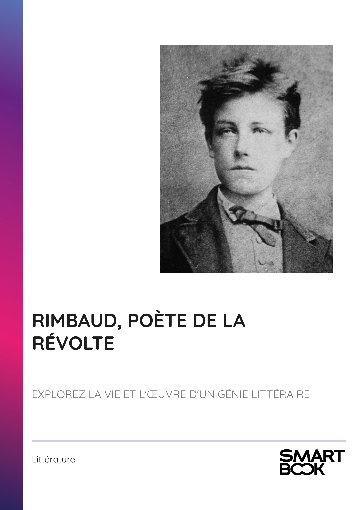

- INTRODUCTION - ARTHUR RIMBAUD : UNE RÉVOLTE POÉTIQUE ET MODERNE
- Chapitre 1 - ENFANCE ET ORIGINES : LE CONTEXTE FAMILIAL DE RIMBAUD
- Chapitre 2 - LA PRÉCOCITÉ LITTÉRAIRE : PREMIERS ÉCRITS ET INSPIRATIONS
- Chapitre 3 - LA RÉVOLTE DE L'ADOLESCENCE : RENCONTRES ET INFLUENCES
- Chapitre 4 - RIMBAUD ET VERLAINE : UNE RELATION PASSIONNÉE
- Chapitre 5 - ŒUVRES MAJEURES : ANALYSE DE 'LE DORMEUR DU VAL' ET 'UNE SAISON EN ENFER'
- Chapitre 6 - MODERNITÉ ET EXPÉRIMENTATION : LE STYLE POÉTIQUE DE RIMBAUD
- Chapitre 7 - LA FIN DE LA CARRIÈRE LITTÉRAIRE : ABANDON DE L'ÉCRITURE
- Chapitre 8 - EXIL ET QUÊTE IDENTITAIRE : LA DERNIÈRE PARTIE DE LA VIE DE RIMBAUD
- CONCLUSION - L'HÉRITAGE INTEMPOREL DE RIMBAUD
📄 Consulter les annexes du livre
Mentions légales